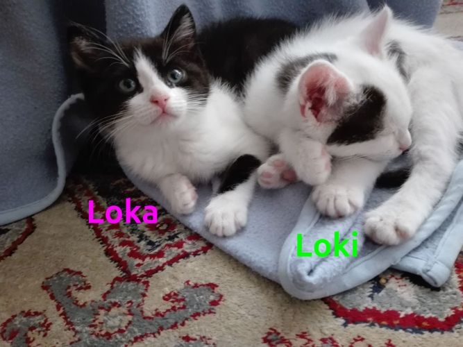
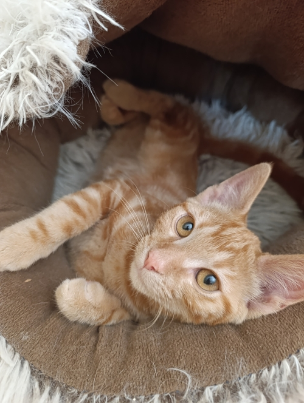
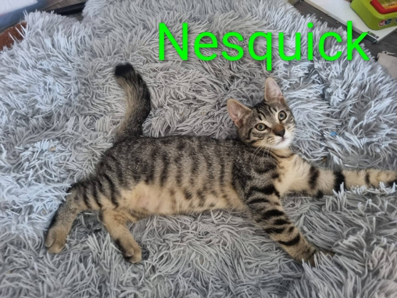
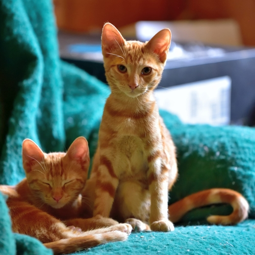

Lulu ♂
2 ans

❌ Fermer cette fiche ❌


🐈 Lulu à l'adoption.
Lulu est un petit chat mâle de 2 ans trouvé errant dans les rues. Déjà sociabilisé, Lulu connait les humains.
Lulu est un chouette chat très calme et très affectueux, il adore les câlins et n'est pas farouche du tout. Sa famille d'accueil actuelle nous le décrit comme un chat en or, et une très bonne pâte.
Lulu cohabite avec un chien et tout se passe très bien !
Ce gentil chat noir aux reflets roux est malheureusement positif au FIV.
👩⚕️ Pour rappel, les chats FIV + ne sont pas forcément impactés par le virus au cours de leur vie et peuvent vivre aussi longtemps qu'un autre chat, il faudra cependant porter une attention particulière à sa santé.
En ce qui concerne la présence d'autres chats au sein du foyer, cela ne nous semble pas impossible, c'est à discuter ensemble.
Lulu semble ok pour une vie en appartement.
🌎 À rencontrer sur Gap (05).
Adoption à 180€.
Lulu est :
- ☑️ Identifié par puce électronique
- ☑️ Castré
- ☑️ Testé fiv+
- ☑️ Déparasité
- ☑️ Vacciné
Le certificat d'engagement et de connaissance, délivré par nos soins, doit être lu et signé. Vous pouvez consulter ce document en cliquant ici.
Pour nous contacter à son sujet, utilisez la page dédiée de notre site, section "je souhaite adopter un chat". Précisez que c'est Lulu qui vous intéresse et donnez-nous un maximum de détails sur l'accueil que vous lui offririez. Nous reviendrons vers vous dès que possible !
Nym ♀
2 ans

❌ Fermer cette fiche ❌
🐈 Nym à l'adoption.
Nym est une jolie femelle angora de 2 ans, trouvée errante il y a quelques semaines (et non identifiée).
Elle a été rapidement vue par nos vétérinaires, et ses examens se sont tous avérés bons, Nym se porte bien !
Cette gentille chatte est très proche des humains qui composent sa famille d'accueil actuelle. Nym est de nature douce et très curieuse, cuisinière dans l'âme, elle vient analyser les casseroles au moment de la préparation des repas !
Elle raffole des câlins et se laisse facilement porter.
Nym a tout pour plaire et rendre heureuse une famille entière !
🐈⬛ Un extérieur serait un plus pour la belle.
🌎 À rencontrer sur Embrun (05).
Adoption à 200€.
Nym est :
- ☑️ Identifiée par puce électronique
- ☑️ Stérilisée
- ☑️ Testée fiv/felv négative
- ☑️ Déparasitée
- ☑️ Vaccinée (rappel dans un an)
- ☑️ Certifiée en bonne santé par un vétérinaire
Le certificat d'engagement et de connaissance, délivré par nos soins, doit être lu et signé. Vous pouvez consulter ce document en cliquant ici.
Pour nous contacter à son sujet, utilisez la page dédiée de notre site, section "je souhaite adopter un chat". Précisez que c'est Nym qui vous intéresse et donnez-nous un maximum de détails sur l'accueil que vous lui offririez. Nous reviendrons vers vous dès que possible !
Bagheera, T'challa, Sherkan ♀ - 3 mois
Krokmou ♂ - 3 mois

❌ Fermer cette fiche ❌
🐈 Bagheera, T'challa, Krokmou et Sherkan à l'adoption.
Il est temps pour nos magnifiques panthères de trouver leurs familles pour la vie ! Il y a trois minettes et un matou. Ils sont nés début mai. Ils ont été récupérés dans la rue par des bénévoles et sociabilisés par la patience et la douceur de notre merveilleuse famille d'accueil de Chabottes.
Nous vous proposons à l'adoption :
- 💛 Bagheera : minette très sociable qui adore les câlins.
- 💚 T'challa: à l'image de sa sœur Bagheera, minette proche de l'humain, douce et câline.
- 🩵 Krokmou : le mâle de la bande. Joueur et dynamique, mais pas moins câlin !
- 💜 Sherkan: de loin la plus timide de la fratrie. Nous cherchons donc pour elle impérativement un foyer avec présence d'autres chats sociaux et sans jeunes enfants.
🌎 À rencontrer sur Chabottes (05).
Adoption à 130€.
Bagheera, T'challa, Krokmou et Sherkan sont :
- ☑️ Identifiés par puce électronique
- ☑️ Déparasités
- ☑️ Primo-vaccinés
Un chèque de caution de 200 euros sera demandé pour la stérilisation obligatoire à 6 mois.
Le certificat d'engagement et de connaissance, délivré par nos soins, doit être lu et signé. Vous pouvez consulter ce document en cliquant ici.
Pour nous contacter à leur sujet, utilisez la page dédiée de notre site, section "je souhaite adopter un chat". Précisez que c'est Bagheera, T'challa, Krokmou ou Sherkan qui vous intéresse et donnez-nous un maximum de détails sur l'accueil que vous leur offririez. Nous reviendrons vers vous dès que possible !
Loki ♂ et Loka ♀ - 3 mois
❌ Fermer cette fiche ❌
🐈 Loki et Loka à l'adoption.
Frère et sœur, Loki (petit mâle blanc et noir) et Loka (petite femelle noire et blanche) seront tous deux bientôt prêts à rejoindre leur famille pour la vie !
Le temps d'aller les rencontrer et de craquer sur leurs bouilles de chatons... 😺
Joueurs, pots de colle, ronronneurs, ils ont tous les deux de quoi faire fondre votre cœur.
À adopter ensemble ou séparément !
🌎 À rencontrer sur Briançon (05).
Adoption à 130€.
Loki et Loka sont :
- ☑️ Identifiés par puce électronique
- ☑️ Déparasités
- ☑️ Primo-vaccinés
- ☑️ Certifiés en bonne santé par un vétérinaire
Un chèque de caution de 200 euros sera demandé pour la stérilisation obligatoire à 6 mois.
Le certificat d'engagement et de connaissance, délivré par nos soins, doit être lu et signé. Vous pouvez consulter ce document en cliquant ici.
Pour nous contacter à leur sujet, utilisez la page dédiée de notre site, section "je souhaite adopter un chat". Précisez que c'est Loki et Loka qui vous intéresse et donnez-nous un maximum de détails sur l'accueil que vous leur offririez. Nous reviendrons vers vous dès que possible !
Asmar ♂
3 mois
❌ Fermer cette fiche ❌
🐈 Asmar à l'adoption.
Ce petit chaton roux, c'est Ch'Asmar ! Adorable petite boule de poils, Asmar a trois mois et est fin prêt à rencontrer sa famille pour la vie.
Son frérot, Azur, a déjà eu cette chance il y a une quinzaine de jours.
Asmar est un chaton bien dans ses pattes, à l'aise avec ses congénères, câlin et joueur !
Il peut se montrer un peu timide au départ et aura besoin de quelques jours pour s'acclimater à sa nouvelle famille. Un environnement calme sans jeune enfant sera sans doute préférable. Cependant, si vos enfants sont calmes et patients, Asmar pourrait vite devenir leur meilleur ami.
Asmar serait également ravi d'intégrer une famille avec d'autres copains à quatre pattes ! Ou d'être adopté avec un autre copain chaton.
🌎 À rencontrer sur Guillestre (05).
Adoption à 130€.
Asmar est :
- ☑️ Identifié par puce électronique
- ☑️ Déparasité
- ☑️ Vacciné (rappel dans un an)
- ☑️ Certifié en bonne santé par un vétérinaire
Un chèque de caution de 200 euros sera demandé pour la stérilisation obligatoire à 6 mois.
Le certificat d'engagement et de connaissance, délivré par nos soins, doit être lu et signé. Vous pouvez consulter ce document en cliquant ici.
Pour nous contacter à son sujet, utilisez la page dédiée de notre site, section "je souhaite adopter un chat". Précisez que c'est Asmar qui vous intéresse et donnez-nous un maximum de détails sur l'accueil que vous lui offririez. Nous reviendrons vers vous dès que possible !
Nesquick, Pikatchu, Éclair ♂ - 3 mois
❌ Fermer cette fiche ❌

🐈 Nesquick, Pikatchu et Éclair à l'adoption.
Ces trois chatons de trois mois sont désormais à la recherche de leur famille pour la vie !
Ce sont tous des mâles. Ils sont très sociaux. Habitués aux congénères, aux enfants, aux chiens...
Ils peuvent vivre en intérieur.
Ils sont joueurs et câlins. Des minous au top qui vous combleront de ronrons.
🌎 À rencontrer sur Saint Julien en Champsaur (05).
Adoption à 130€.
Nesquick, Pickatchu et Éclair sont :
- ☑️ Identifiés par puce électronique
- ☑️ Déparasités
- ☑️ Primo-vaccinés
Un chèque de caution de 200 euros sera demandé pour la stérilisation obligatoire à 6 mois.
Le certificat d'engagement et de connaissance, délivré par nos soins, doit être lu et signé. Vous pouvez consulter ce document en cliquant ici.
Pour nous contacter à leur sujet, utilisez la page dédiée de notre site, section "je souhaite adopter un chat". Précisez que c'est Nesquick, Pikatchu ou Éclair qui vous intéresse et donnez-nous un maximum de détails sur l'accueil que vous leur offririez. Nous reviendrons vers vous dès que possible !
Rouki, Chopin, Rouko ♂ - 3 mois
❌ Fermer cette fiche ❌
🐈 Rouki, Chopin et Rouko à l'adoption.
Ces trois chatons de trois mois sont désormais à la recherche de leur famille pour la vie !
Ce sont tous des mâles, joueurs, rigolos et espiègles. Ils ne manqueront pas d'animer votre foyer et de vous combler de bonheur et de rires.
Venez les rencontrer et passer un moment chatesque en leur compagnie !
🌎 À rencontrer sur Briançon (05).
Adoption à 130€.
Rouki, Chopin et Rouko sont :
- ☑️ Identifiés par puce électronique
- ☑️ Déparasités
- ☑️ Primo-vaccinés
Un chèque de caution de 200 euros sera demandé pour la stérilisation obligatoire à 6 mois.
Le certificat d'engagement et de connaissance, délivré par nos soins, doit être lu et signé. Vous pouvez consulter ce document en cliquant ici.
Pour nous contacter à leur sujet, utilisez la page dédiée de notre site, section "je souhaite adopter un chat". Précisez que c'est Rouki, Chopin ou Rouko qui vous intéresse et donnez-nous un maximum de détails sur l'accueil que vous leur offririez. Nous reviendrons vers vous dès que possible !